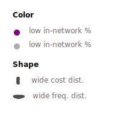
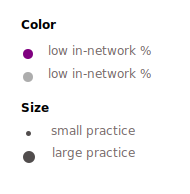

Cost/Event
Events/1000
Outpatient Referrals - Cost, Frequency, and Variation
Organization: Independent, data from Arcadia.io
Role: Design & development
Tags: data visualization
Tech: d3.js
Code: Github repository
Portfolio Context
As my interest in information design has taken root, I have experimented with creating dynamic visual forms to capture complex patterns and interactions. My work on Referral Networks speaks to this pattern, and to my sustained interest in the way we process and visualize information.
Project Context
While researching medical referral networks as part of my job at Arcadia, I observed how static reporting tools were used to inform decisions on hospital network structure. The static nature of these reports stands in stark contrast to the complexity of referral networks. Referral patterns are complex, composed of thousands of relationships between referring providers and specialists. To develop a more accurate intuition for referral networks, I thought, one would have to see the data – visualize its texture, patterns, and aberrations.
In order to create a more representative view of a referral network, I independently prototyped an interactive visual. Referral Networks brings to life the individual provider relationships that compose a referral network. Providers are visualized as nodes, and their relationships are shown as attractive and repulsive forces. The resulting form is venous, layered, and chaotic. I designed and developed the project independently, and displayed it at the HIMSS Health IT conference.
The underlying dataset for this project was taken from a client database at Arcadia.io. It contains one year of referral data from a large health system in Northeastern US.
In order to assess cost variance, I aggregated the data set to the procedure (CPT) code level (procedure codes are intended to be fixed in cost). I chose to focus on the most common procedure within each procedure category (i.e. 'Cardiovascular', 'Nervous'). I then sliced the data by 'referral path' - creating one row for each set of referrals from a given provider to a specialist.
After cleansing, categorized, and deidentifying the data, I took to javascript to visualize the dataset (in many, many iterations). My aim was to create a tool that visualizes all meaningful edges of the data. The resulting visual is highly interactive - enabling users to explore patterns across multiple dimensions and scales.
'Network Explorer' enables users to assess referral patterns at the procedure, practice, and referral level. The flow between these grains is sequential, as the user drills down to greater levels of detail.
In the recording below, the user focuses on identifying poor referral patterns in which there is opportunity for improvement.